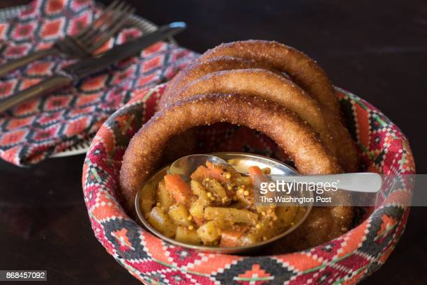

SELROTI

Selroti
Selroti is a pure nepalese traditional food/snack prepared during festivals.It is also consumed as a breakfast
snack these days.
Ingredients
- 2 cups uncooked rice
- 3 tbsp. sugar
- 3 tbsp. ghee (clarified butter
- 1/2 cup milk
- 1 tbsp. rice flour if the batter is thin (liquid)
Steps/Directions
- Soak rice overnight.
- Drain out water and put rice in mixer grinder along with sugar and ghee.
- Grind for about 3-4 minutes until it becomes paste.
- If the batter is too liquid, add 1 tbsp. of rice flour.
- Cut the top portion of a plastic bottle to drop batter.
- Add oil 1/2 inch in a pan and heat.
- Drop the batter in oil making round circle.
- Fry until golden brown.
- Enjoy.
Go Back